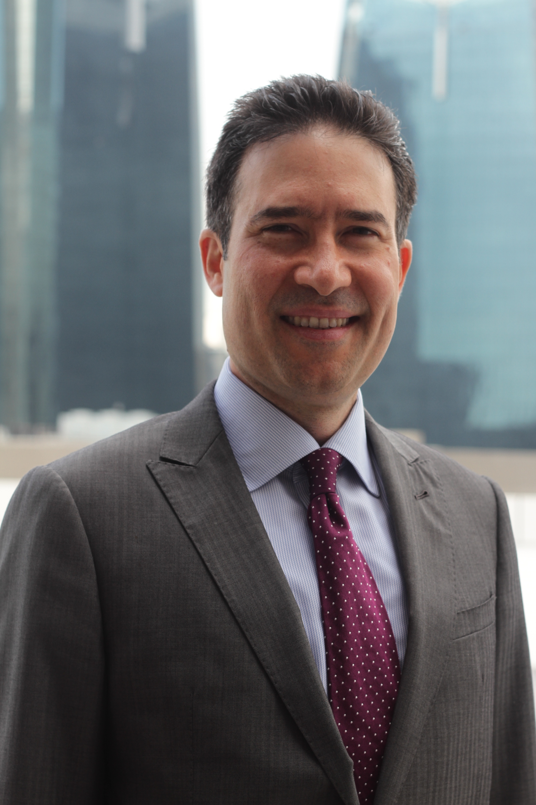

Premiación Proyectos del Año
Expositor: 
Jose Gabriel Miralles Estribí
Socio fundador y presidente de FranklinCovey LATAN Panamá y miembro del equipo global de estrategia de FranklinCovey Internacional.
Ingeniero civil graduado del Institute of Technology de la Universidad de Minnesota (EEUU).
Co-autor del libro best-seller ''Las 4 Disciplinas de la Ejecución'' para Latinoamérica.
Ha servido como asesor a múltiples organizaciones locales y multinacional, impulsando su crecimiento sostenible y ayudándoles a lograr sus visiones de negocio.
Emilio Regueira
Fundador y vocalista de "Los Rabanes".
Ganador de Latin Grammy y premios musicales diversos.
Compositor y arreglista de temas para artistas como: Gilberto Santa Rosa; Gloria Estefan, Thalia, Don Omar, entre otros.
A nivel social- empresarial:
Embajador de instituciones benéficas como "Operación Sonrisa" y "Clamor en el barrio", entre otros.
Desarrollador e inversionistas de urbanizaciones y barriadas en Azuero y Real State.
Líder motivador/ conferencista de empresas de networking internacionales, instituciones sociales, eclesiásticas y educativas.